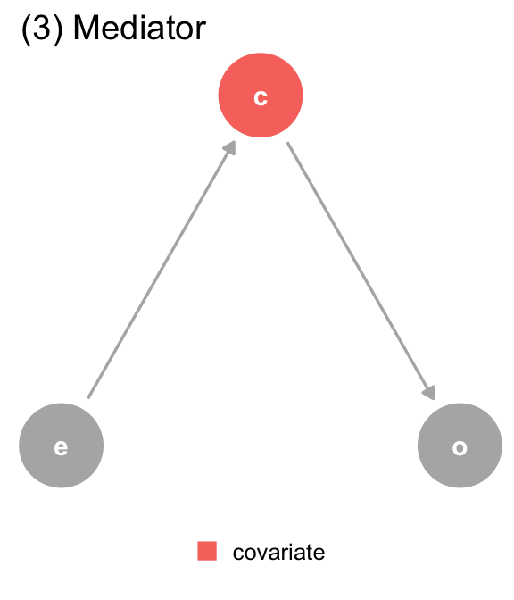

Causality and causal inference is a broad area that covers applications in biomedical research, epidemiology, economics, sociology, law and others. It also encompasses aspects of statistics and philosophy, driven by the context within which causality is being investigated.
Causality is not a concept that is necessarily clear-cut in its evaluation. Two individuals have heavy influence in this field: Judea Pearl, a computer scientist and philosopher at UCLA and Donald Rubin, a statistician at Harvard University. Rubin promoted a “potential outcomes framework” for the statistical evaluation of causality, which has been furthered by the work of Miguel Hernan, a biostatistician at Harvard University. Pearl, on the other hand, promoted the idea that causality cannot be evaluated purely from data and empirical approaches but requires an understanding of context. He developed causal diagrams and the utility of Bayesian networks as a means to make probabilistic evaluations of causality. We will use both frameworks to explore this topic, and see how to consider causality within the biomedical realm. This objective is stated by both Pearl and Rubin in their works
This chapter, and the following one, is based on several reference works:
We are primarily interested in causal statements and questions of the nature
Smoking causes lung cancer
How effective is a treatment in prolonging life among lung cancer patients?
What is the healthcare cost attributable to the increasing prevalence of obesity?
Can scheduling records and hospital interactions prove someone is guilty of medical malpractice?
Can a drug that targets the activity of a particular biological functional pathway cause a disease to be cured by the drug?
We can think through many more, across different fields.
Data, particular Big Data, appear to be attractive means to evaluate such statements. Surely, as we collect more data, we should be able to ascertain whether a drug can cure disease, or whether using Ozempic will reduce weight, or that eating less red meat will prolong our lives.
Statistical approaches try to find patterns in data beyond what might be caused by randomness or measurement errors. This is leveraged heavily to try and assess whether there is some relationship, or association between some treatment or experience (generally denoted an exposure) and the eventual outcome we want to study. Similarly, supervised machine learning tries to use different features in a data corpus to predict an outcome. Both leverage observed patterns of correlation or association between the features (covariates) and the outcome to do so. A lot of effort also goes into improving predictions or modeled associations by (a) experimental design, (b) adding more independent features to improve the precision of the prediction or association.
These modeling efforts really are leveraging the observed association between features and the outcome. This observed association is often subject to many other factors, including biases in subject selection and data collection, presence of related factors both observed and unobserved that can influence the observed association, and measurement error. We saw earlier how the observed data might lead to wrong inferences, or at the very least, reporting spurious associations. This leads to the oft-quoted aphorism in statistics that “correlation does not mean causation”, but often no clear counter as to what would show causation.
What is an “association”?
We often use the term association in this text and other textbooks and papers. What do we mean as statisticians? The term is often used to say that two variables have a relationship, in that there is some pattern between the values of the two variables. What we often tacitly imply in using the term is correlation, in that high values of one variable appear to co-occur on average with high values of the other variable (positive correlation), or low values of the other variable (negative correlation). Note, I specifically use the term “co-occur”, because that’s really all we can determine in observational data.
Just because observational values co-occur doesn’t mean that one caused the other. There are plenty of examples of spurious correlations and ecological fallacies where there is no actual causal relationship between the variables, while we observe a high degree of association between them.
However, the word “association” is often tacitly associated with causal intent when it is used, instead of being explicit
“Our results suggest that ‘Schrödinger’s causal inference,’ — where studies avoid stating (or even explicitly deny) an interest in estimating causal effects yet are otherwise embedded with causal intent, inference, implications, and recommendations — is common.”
Haber, N. A., S. E. Wieten, J. M. Rohrer, O. A. Arah, P. W. G. Tennant, E. A. Stuart, E. J. Murray, et al. 2022. “Causal and Associational Language in Observational Health Research: A Systematic Evaluation.” Am J Epidemiol 191 (12): 2084–97.
So, if we can only look at observed data and associations between variables, how do we go further? What we would like to know in many occasions is, whether an exposure caused disease. Not just an association, but a causation. A higher, stronger standard of evidence. That is the goal of the rhetorical question we started with.
Today, we generally accept that “smoking causes lung cancer”. However, not all smokers get lung cancer, and not all lung cancer patients are smokers. But yet, we think we have sufficient evidence to infer a causal link. What evidence gets us to this inference?
Three objectives of data scientific investigation
We typically have one of three objectives in data scientific investigations:
Descriptive
Description of patterns in the data in order to gain insights into inter-relationships between different measured variables. This provides a sense of associations, patterns, and outliers. Examples include describing patterns of infant mortality over time and geography, fitting a polynomial line to a scatter plot of cholesterol levels at 40 years old with age at death, looking for patterns in gene expression that are different between ER/PR positive and HER2 positive and triple-negative breast cancer tumors. Think back to John Snow’s cholera analysis.
Predictive
Predicting a categorical or quantitative state from other measured features. Machine learners and computer scientists see this as their main objective for data science, and we know of widespread use of such investigations in finance, advertising, marketing and other domains. In biomedical science, we also do use predictive modeling; for example, predicting a woman’s lifetime risk of getting breast cancer, predicting cell types from transcriptomic data in single-cell experiments, predicting adult height from childhood growth patterns.
Explanation
Observing an outcome and trying to explain what other measured factors might be implicated in causing or influencing that outcome. In biomedical science, this is the main question of interest. The idea being that, if we can figure out the “why” of disease development, we can get to the “how” of preventing or curing it. If we find that a set of genes is implicated in developing cystic fibrosis, we might pay more attention to individuals with that genetic profile. If we can figure out genetic profiles for different kinds of breast cancer, we can target those profiles with different drugs (tamoxifen for ER/PR+ breast cancer, herceptin/Enhertu for HER2+ breast cancer, for example); or, if we find a genetic profile common to the development of multiple cancers, we have the potential to target multiple cancers with the same drug (Merck’s Keytruda PD-L1 immune checkpoint inhibitor that has proven effective in multiple cancers, given a common implication of increased PD-L1 expression in many cancers)
One model, different objectives
Most supervised learning methods, including something as basic as linear regression, can be used to achieve all three objectives. but they are approached and fit differently.
Let’s consider linear regression:
You can fit a linear or polynomial model to a scatter plot to summarise patterns in the data
You can use it to predict length of stay in a hospital based on intake department, season, insurance status, age, gender and race. This process typically uses (stochastic) gradient descent for fitting and cross-validation to identify robustness and generalizability of the class of models we are fitting.
You can use it to ask to what extent intake department influences length of hospital stay, i.e. how does different conditions present on admission affect how long a patient stays, at least on average. Here, we start thinking about causal relationships, proper adjustment in a multivariate model, confounding and other biases. We usually fit these models (as a statistician would) using the usual closed-form methods. Why is this interesting? If we can identify that the relationship between intake department and length of stay is causal, we can then try to optimize conditions in departments with higher lengths of stay to improve the overall hospital situation (Lower lengths of stay are desirable for hospitals)
So the same model has different purposes and different optimization approaches. That’s partly why it can be confusing.
An explainable objective gets us towards causal models, but not all the way there. Issues around bias, confounding, and fairly accounting for potential outcomes (counterfactuals) come into play. You have to make assumptions in a causal model that are sometimes not verifiable. But, nonetheless, the thought experiment and process of getting to a reasonable causal model is important both for statistically thinking about a question or problem, and making valid inference and decisions.
We can think about a hierarchy of causation, following Pearl (Figure 3.1)
Figure 3.1: The Ladder of Causation, from The Book of Why, p. 28
Within this hierarchy, “machine learning programs (including those with deep neural networks) operate almost entirely in an associational mode” ( Pearl and Mackenzie (2018), pp. 30). As we said above, supervised learning models are entirely based on observable patterns and so can’t necessarily identify causal relationships, no matter how large the training data is. In particular, observing that \(\Pr(Y | X) > \Pr(Y)\) does not imply that X has a causal relation with Y, since that increase in conditional probability can happen due to other causes like confounders, as we will investigate later.
Interventional causation cannot be assessed merely by collecting data. The more straightforward methods include experimental design like randomized controlled studies and A/B testing methods, which can generate balance in other factors and allows statistical estimation of the interventional effect. We can also approach this problem using modeling approaches in observational studies, including propensity scoring that we will introduce in Chapter 4. Such causal models allow us to use observed data to make (a modicum of ) causal inferences.
The third run of this ladder links Pearl’s ideas to Rubin’s potential outcomes framework. It asks what could have happened if a different (unobservable) action was experienced. We’ll describe this more in the next section, but in the mean time, understand that this idea cannot be directly evaluated using observable data, since we can only observe the outcome that results from the action or exposure that was actually experienced, and other potential outcomes that might have happened if different exposures were experienced cannot be part of the data corpus. This is of course an area where machine learning has contributed some more understanding, especially in the concept of digital twins (also see Katsoulakis et al. (2024)) where we can model and simulate doppelgangers who might exhibit different outcomes when experiencing different exposures, at least in silico.
Katsoulakis, Evangelia, Qi Wang, Huanmei Wu, Leili Shahriyari, Richard Fletcher, Jinwei Liu, Luke Achenie, et al. 2024. “Digital Twins for Health: A Scoping Review.”Npj Digital Medicine 7 (1): 1–11. https://doi.org/10.1038/s41746-024-01073-0.
Concept 1: Counterfactuals, or potential outcomes
We consider different related actions that can be performed on an experimental unit. For example, we can consider the actions {Take ibuprofen} and {Don’t take ibuprofen} as two actions that a person might take when experiencing a headache. Each action can then be associated with an outcome for that individual, e.g.
Action
Outcome
Take ibuprofen
Headache resolves in 1 hour
Don’t take ibuprofen
Headache resolves in 6 hours
These are potential outcomes since we can only observe one of them depending on what action was actually taken. This is a simple example with two potential actions, but this can be generalized to multiple potential outcomes.
The idea of counterfactuals is at the top rung of the Ladder of Causation, and it involves the kinds of questions that we want to answer, like, would a patient recover faster if I use a different kind of suture on a wound? This is also the question we ask all the time in clinical trials:
Would a patient live longer if we give him a new drug instead of the current standard of treatment?
The problem is that, we can never answer this question using data from the physical world, since we only have one shot at giving a patient one of the two drugs, and we can’t physically know what would happen if we gave the other drug.
Notationaly, consider a study with n experimental units denoted by \(i = 1, \dots, n\), Suppose we have a treatment (or exposure, or policy; the semantics are contextual) that takes two levels 0 (no treatment) and 1 (treatment). We can then see two potential outcomes
\[
Y_i(1) \text{ and } Y_i(0)
\]
under the treatments 0 and 1. The individual causal effect (which is unobservable) is \(Y_i(1) - Y_i(0)\). We could think of the following thought experiment. We look at a population where we could look at all possible outcomes:
If we could actually see this, we see that the average causal effect was -3.2 . If we randomly assign people in this population to take ibuprofen or not, we would get
See what you would get if you didn’t randomize the treatment allocation.
Once again, we’ll return to ways of answering this question in Chapter 4.
Concept 2: Confounders, colliders and mediators
Yule-Simpson Paradox
Confounding bias is a central concern of causal inference. It occurs when a variable influences both who is selected for treatment (or is exposed) and the outcome of the experiment. Confounders can be known (measured) or unknown (unmeasured). In a causal diagram, we can denote that Z is a confounder of the relationship between X and Y if
This diagram shows that there are two sources of association between X and Y. One is the path \(X \rightarrow Y\) which represents the causal effect of X on Y, and the path \(X \leftarrow Z \rightarrow Y\) which includes the common cause Z. This second path is an example of a backdoor path.
A backdoor path
A backdoor path is a noncausal path between treatment and outcome that remains even if all arrows pointing from the treatment to other variables are removed. That is, the path has an arrow pointing into treatment. (Hernan and Robins (2023))
Confounding, or rather, identifying confounders, can be approached using what is called the backdoor criterion.
The backdoor criterion
A set of covariates Z satisfies the backdoor criterion if all backdoor paths between X and Y are blocked by conditioning on Z, and Z contains no variables that are descendants (i.e., flow from) the treatment X. (Hernan and Robins (2023))
Hernan, Miguel A, and James M Robins. 2023. “Causal Inference: What If.”
Pearl, Judea, and Dana Mackenzie. 2018. The Book of Why. New York: Basic Books.
The idea behind this backdoor criterion is, if we condition on values of variables satisfing the backdoor criterion, then the spurious association generated by the confounder disappears. We can “deconfound” (Pearl and Mackenzie (2018)) the effect of the confounder by computing the effect of X on Y for every unique value of Z separately, and then take the weighted average of effects, with weights determined by the relative prevalence of different values of Z. To fix ideas, if we consider our earlier ibuprofen example and consider Z to be age groups, then we would compute the treatment effect within each age group, and then take the average treatment effect weighted by the number of people in each age group. One way to statistically approach this is through adjustment for the confounder in a regression model. This approach can be used in observational, non-randomized studies, but there is a more principled approach we will introduce in Chapter 4.
The concept of backdoor paths also tells us why random allocation of an exposure to subjects works to prevent confounding, a.k.a. the randomized controlled trial. If you randomly allocate treatments/exposures to subjects, you break up any causal paths from other variables to the treatment, and hence prevent the presence of any backdoor paths. The only causal path to the outcome comes from the randomly allocated treatment.
Other forks in the road: mediators and colliders
We can also consider the following two causal pathways and their implications on conditioning.
A mediator modifies the effect of X on Y, and if you decide to condition on Z then you will remove the effect of X on Y.
A collider is associated with both X and Y, but in a non-causal manner. X and Y are not causally related, but conditioning on Zinduces a spurious association between X and Y.
Pearl describes rules that tell us how to stop the flow of information through any individual junction:
In a chain junction \(A \rightarrow B \rightarrow C\), controlling for B prevents information from A from flowing to C
In a fork or confounding junction \(A \leftarrow B \rightarrow C\), controlling for B prevents information from A from flowing to C and vice versa
In a collider \(A \rightarrow B \leftarrow C\), A and C are independent, but controlling for B makes information flow between A and C
Controlling for descendants (or proxies) of a variable is like “partially” controlling for the variable itself, and so “partially” has the consequences described above.
These ideas can inform what variables one should adjust for in a statistical model. Unfortunately there is a tendency to adjust for all potential confounders, whether the causal diagram is investigated or not, and this can in itself lead to spurious associations. The causal diagrams help us understand what variables are potential confounders and so need to be adjusted for. Note here that creating the causal diagram is not statistical in nature but depends primarily on domain knowledge.
Examples of confounding
The effect of aspirin on the risk of stroke may be confounded if the drug is more likely to be prescribed to individuals with heart disease that is both an indication for treatment and a risk factor for the disease. An unmeasured variable, atherosclerosis, is a causal factor for both heart disease and stroke. Such confounding is often called confounding by indication.
The effect of a DNA sequence A on the risk of developing cancer will be confounded if there exists another DNA sequence B that has a causal effect on cancer and is more frequent among people carrying A. This phenomenon is often called linkage disequilibrium. A similar bias can occur if the particular causal sequence B is more prevalent in some ethnicities than others, and the study includes a mixture of individuals from different ethnic groups; this is often referred to as population stratification.
Smoking and alcohol consumption are risk factors for several cancers, and they also tend to co-occur, resulting in confounding.
Appearances are deceiving
We can consider the implications of different causal patterns in our analysis. The package quartets provides one set of examples.
The following exposition is from Causal Inference in R, chapter 6
Though the observed associations between exposure and outcome are similar here, there is the presence of a third variable, covariate, that affects the causal relationship in different ways. The covariate is acting in different ways in each dataset. Our usual way of thinking about a confounder, in terms of a variable that is associated with both outcome and exposure, doesn’t quite work in distinguishing the causal paths; the respective associations are very similar.
We can even look at the effect of adjusting for the covariate:
Dataset
ATE not adjusting for Z
ATE adjusting for Z
Correlation of X and Z
1
1.00
0.55
0.70
2
1.00
0.50
0.70
3
1.00
0.00
0.70
4
1.00
0.88
0.70
It turns out that the four datasets have quite different causal structures:
(a) The DAG for dataset 1, where covariate (c) is a collider. We should not adjust for covariate, which is a descendant of exposure (e) and outcome (o).
(b) The DAG for dataset 2, where covariate (c) is a confounder. covariate is a mutual cause of exposure (e) and outcome (o), representing a backdoor path, so we must adjust for it to get the right answer.

(c) The DAG for dataset 3, where covariate (c) is a mediator. covariate is a descendant of exposure (e) and a cause of outcome (o). The path through covariate is the indirect path, and the path through exposure is the direct path. We should adjust for covariate if we want the direct effect, but not if we want the total effect.
(d) The DAG for dataset 4, where covariate (c) is a collider via M-Bias. Although covariate happens before both outcome (o) and exposure (e), it’s still a collider. We should not adjust for covariate, particularly since we can’t control for the bias via u1 and u2, which are unmeasured.
Figure 3.2: The DAGs for the Causal Quartet
The DAGs suggest the proper adjustment models for each dataset
Data generating mechanism
Correct causal model
Correct causal effect
(1) Collider
Y ~ X
1.0
(2) Confounder
Y ~ X ; Z
0.5
(3) Mediator
Direct effect: Y ~ X ; Z Total Effect: Y ~ X
Direct effect: 0.0 Total effect: 1.0
(4) M-Bias
Y ~ X
1.0
Residual confounding
Residual confounding is often a complication in many observational studies where covariate adjustment to account for measured confounders has been undertaken. This refers to confounding that persists after adjustment, and may be due to unmeasured confounders or due to incorrect analysis.
Pearl’s do-operator
Pearl proposes a do-operator to describe causaility. This operator is defined operationally as \(P(Y | do(X=1))\) is the probability of seeing Y when one is made to experience X=1, rather than passively observing X. This is not a straightforward concept, but generally speaking, we can say that we have observed the causal effect of X on Y if
\[
P(Y | X) = P(Y | do(X))
\]
with inequality here suggesting the presence of confounders, both measured and unmeasured.
Feel free to delve further into this in The Book of Why, or Pearl’s more comprehensive work, Causality.
Concept 3: Principles to establish causality
This appears quite straightforward, but does have some underlying assumptions:
No interference:
Unit i’s potential outcomes do not depend on the outcomes of the other units.
Consistency:
There are no other versions of the treament, or that we need treatment levels to be well defined
These assumptions together are called the Stable Unit Treatment Value Assumption (SUTVA) (Rubin (1980))
Rubin, Donald B. 1980. “Discussion of ‘Randomization Analysis of Experimental Data in the Fisher Randomization Test’ by Basu.”Journal of the American Statistical Association 75 (371): 591–93.
Exchangeability
We assume that within levels of relevant variables (confounders), exposed and unexposed individuals have the same chance of experiencing any outcome prior to being exposed. This can be interpreted to mean that there is no unmeasured confounding
Positivity
Each individual has a positive chance of being exposed to every available exposure level. In our earlier example, this means that there is no one who is prohibited from taking ibuprofen, and no one who is required to just take ibuprofen.
The point of these principles is to enable apples-to-apples comparison, so that the individuals are comparable and can be good proxies for each others’ counterfactuals.
There are a nice set of simulations here that shows what might go wrong in our causal effect estimates if these assumptions are violated
It is good to remember that these assumptions are, to some extent, idealized and sometimes cannot be validated from the data. We would need information outside of the empirical data to justify making these assumptions.